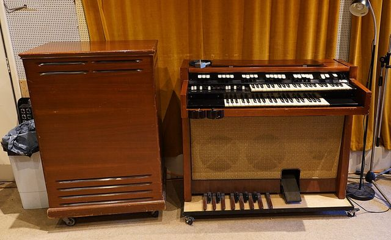

Scheda 059 · 1941 · Pasadena, California
Leslie
Hammond lo ascoltò al telefono e disse di no. Don Leslie se lo costruì in garage e lo vendette lo stesso
Un armadio di legno con dentro una tromba e un tamburo che girano, per rendere meno piatto l'organo.
Il suono vero · 0:22
Un organo Hammond serie H che suona attraverso un cabinet Leslie vero.
0:00 / 0:22
Registrazione di MrAuralization · CC BY 4.0 · Freesound · estratto di 22 s, volume normalizzato
- PRIMO MODELLO
- 1941
- ROTORI
- 2
- GIRI LENTI
- 40-50 al min.
- GIRI VELOCI
- 340-400 al min.
La macchinaChe cos'è
Un armadio di legno con le persiane davanti. Dentro, in basso, c'è l'altoparlante dei bassi con un tamburo che gli gira intorno; in alto un driver per gli acuti con una tromba che gira anch'essa. Due velocità, che chiamano CHORALE e TREMOLO. Il modello più diffuso è il 122, poi c'è il 147, che funziona con più organi, e il 145, che è lo stesso in un mobile da 33 pollici.
Chi l'ha costruitaDon Leslie
Donald Leslie era un tecnico radio di Los Angeles, nato nel 1911 a Danville, Illinois. Nel 1937 compra un organo Hammond e in una stanza piccola lo trova spento, acuto e fermo. Costruisce un prototipo, e nel 1940 lo fa sentire a Hammond in un negozio di Los Angeles, con Laurens Hammond che ascolta per telefono da Chicago. Hammond ne vendeva già uno suo e non apprezzò l'effetto. Nel 1941 Leslie fonda la Electro Music a Pasadena e chiama l'aggeggio Vibratone 30A. Lo costruisce in garage.
Come funzionaCosa c'è dentro
L'altoparlante sta fermo e gira la tromba che gli sta davanti: il suono parte ora in una direzione e ora in un'altra, e chi ascolta sente il timbro ondeggiare e l'intonazione, per effetto Doppler, oscillare un poco. A velocità lenta la tromba fa circa 50 giri al minuto e il tamburo 40, a velocità alta 400 e 340. Quella lenta si chiama CHORALE, quella veloce TREMOLO.
Chi l'ha usataNei dischi
- Jimmy Smithorganista jazz, uno dei nomi che le fonti fanno per primi
- Beatlessu «Tomorrow Never Knows», 1966, dove ci passa la voce di Lennon
- Richard Wrightdei Pink Floyd, tastierista
L'aneddotoUna storia
Hammond cambia l'interfaccia degli altoparlanti sui suoi organi per renderli a prova di Leslie. Leslie ci mette poco ad aggirare il problema. Eppure, dice Wikipedia, degli organi Hammond lui non aveva stima: li avrebbe chiamati «quei maledetti aggeggi». Nel 1965 vende la ditta alla CBS. Hammond compra il nome Leslie nel 1980, o negli anni intorno: le fonti non coincidono. Mi piace la storia di un uomo che ha fatto la fortuna di un organo che non sopportava.
Avvertenze
Tromba e tamburo girano a velocità diverse, 400 e 340 giri al minuto sul veloce. Controllate che si muovano tutti e due, prima di pagarlo.
Il reel
La versione corta
Le cose da sapere in fila, una schermata alla volta, col suono della macchina quando ne esiste una registrazione libera. Aprilo su Instagram ↗
Il carosello
Le 6 tavole
Da dove viene
Fonti
- «Leslie speaker» — Wikipedia (EN): modelli, velocità, Hammond, CBS, chi lo ha usato verificata il 2026-10-13
- «Donald Leslie» — Wikipedia (EN): 1911, la dimostrazione del 1940, Electro Music, 48 brevetti verificata il 2026-10-13
- «Don Leslie» — Procol Harum, necrologio del 2004: Hammond, Electro Music, CBS 1965, 48 brevetti, Hammond e il 1980 verificata il 2026-10-13
Foto: Steve Knight · CC BY 2.0 · Wikimedia Commons
Foto nelle tavole: Hustvedt · CC BY-SA 3.0 · Wikimedia Commons
Suono: Registrazione di MrAuralization · CC BY 4.0 · Freesound · estratto di 22 s, volume normalizzato